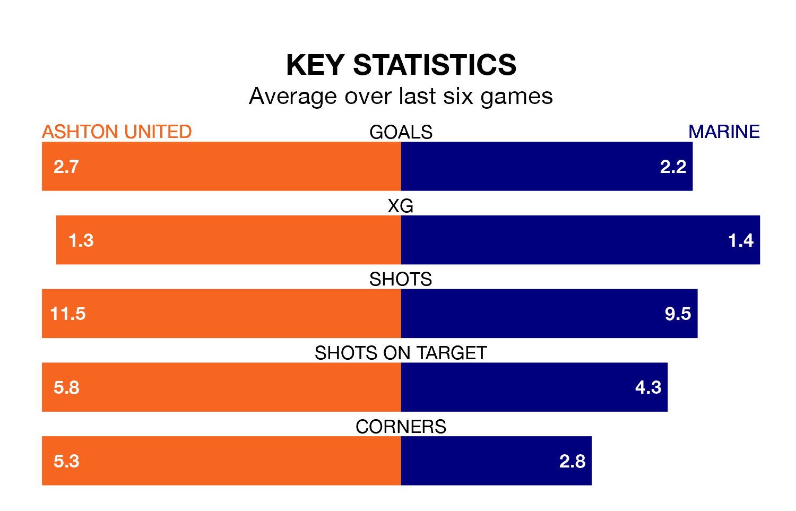

Marine are strong favourites to take all three points despite Ashton United's home advantage in Saturday's match at Hurst Cross.
*Betting Company* are offering odds of 1.88 on Marine sealing the win, with the visitors sitting third in the Northern Premier League table.
Ashton, who are seventh in the league and seven points behind Marine, are priced at 2.98 to win. A draw is set at 3.95.
With 85 goals in 40 games so far this season, Marine are the league's second-highest scorers with 2.1 goals per game. And they are conceding fewer than average, letting in 44 goals at a rate of 1.1 per game.
Ashton are also above average scorers, with 1.8 goals per game, compared to a league average of 1.6. They have conceded 1.4 goals per game.
In the last 10 years, Ashton and Marine have played each other on 12 occasions. Ashton won four of them, Marine three, and they drew five times.
On average, Ashton scored 1.7 goals and Marine 1.6 in those matches.
Their last meeting was on November 11, when they played out a 1-1 draw.
United are in fantastic form in the Northern Premier League, with five wins and one loss from their last six games.
And also with five wins and one loss over that period, the away team's form is identical – they have both taken 15 points from 18.
Ashton's last match was on April 20, a 1-0 win against Stafford Rangers.
Marine beat Atherton Collieries 4-0 last time out, also on April 20.
Updated: 07:59 (UTC), 26/04/24